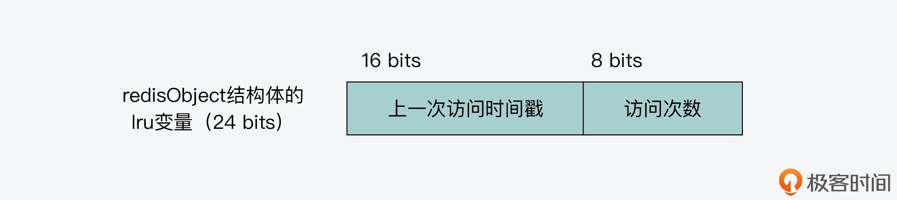
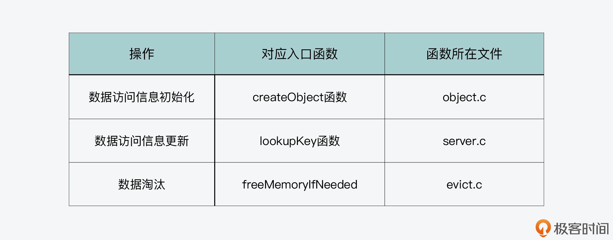

- 00 开篇词 阅读Redis源码能给你带来什么？.md.html
- 01 带你快速攻略Redis源码的整体架构.md.html
- 02 键值对中字符串的实现，用char还是结构体？.md.html
- 03 如何实现一个性能优异的Hash表？.md.html
- 04 内存友好的数据结构该如何细化设计？.md.html
- 05 有序集合为何能同时支持点查询和范围查询？.md.html
- 06 从ziplist到quicklist，再到listpack的启发.md.html
- 07 为什么Stream使用了Radix Tree？.md.html
- 08 Redis server启动后会做哪些操作？.md.html
- 09 Redis事件驱动框架（上）：何时使用select、poll、epoll？.md.html
- 10 Redis事件驱动框架（中）：Redis实现了Reactor模型吗？.md.html
- 11 Redis事件驱动框架（下）：Redis有哪些事件？.md.html
- 12 Redis真的是单线程吗？.md.html
- 13 Redis 6.0多IO线程的效率提高了吗？.md.html
- 14 从代码实现看分布式锁的原子性保证.md.html
- 15 为什么LRU算法原理和代码实现不一样？.md.html
- 16 LFU算法和其他算法相比有优势吗？.md.html
- 17 Lazy Free会影响缓存替换吗？.md.html
- 18 如何生成和解读RDB文件？.md.html
- 19 AOF重写（上）：触发时机与重写的影响.md.html
- 20 AOF重写（下）：重写时的新写操作记录在哪里？.md.html
- 21 主从复制：基于状态机的设计与实现.md.html
- 22 哨兵也和Redis实例一样初始化吗？.md.html
- 23 从哨兵Leader选举学习Raft协议实现（上）.md.html
- 24 从哨兵Leader选举学习Raft协议实现（下）.md.html
- 25 PubSub在主从故障切换时是如何发挥作用的？.md.html
- 26 从Ping-Pong消息学习Gossip协议的实现.md.html
- 27 从MOVED、ASK看集群节点如何处理命令？.md.html
- 28 Redis Cluster数据迁移会阻塞吗？.md.html
- 29 如何正确实现循环缓冲区？.md.html
- 30 如何在系统中实现延迟监控？.md.html
- 31 从Module的实现学习动态扩展功能.md.html
- 32 如何在一个系统中实现单元测试？.md.html
- 结束语 Redis源码阅读，让我们从新开始.md.html
- 捐赠
16 LFU算法和其他算法相比有优势吗？
上节课我给你介绍了 Redis 对缓存淘汰策略 LRU 算法的近似实现。其实，Redis 在 4.0 版本后，还引入了 LFU 算法，也就是最不频繁使用（Least Frequently Used，LFU）算法。LFU 算法在进行数据淘汰时，会把最不频繁访问的数据淘汰掉。而 LRU 算法是把最近最少使用的数据淘汰掉，看起来也是淘汰不频繁访问的数据。那么，LFU 算法和 LRU 算法的区别到底有哪些呢？我们在实际场景中，需要使用 LFU 算法吗？
其实，如果只是从基本定义来看的话，我们是不太容易区分出这两个算法的。所以，今天这节课，我就带你从源码层面来学习了解下 LFU 算法的设计与实现。这样，你就能更好地掌握 LFU 算法的优势和适用场景，当你要为 Redis 缓存设置淘汰策略时，就可以作出合适的选择了。
好，那么在开始学习 LFU 算法的实现代码之前，我们还是先来看下 LFU 算法的基本原理，以此更好地支撑我们掌握代码的执行逻辑。
LFU 算法的基本原理
因为 LFU 算法是根据数据访问的频率来选择被淘汰数据的，所以 LFU 算法会记录每个数据的访问次数。当一个数据被再次访问时，就会增加该数据的访问次数。
不过，访问次数和访问频率还不能完全等同。访问频率是指在一定时间内的访问次数，也就是说，在计算访问频率时，我们不仅需要记录访问次数，还要记录这些访问是在多长时间内执行的。否则，如果只记录访问次数的话，就缺少了时间维度的信息，进而就无法按照频率来淘汰数据了。
我来给你举个例子，假设数据 A 在 15 分钟内访问了 15 次，数据 B 在 5 分钟内访问了 10 次。如果只是按访问次数来统计的话，数据 A 的访问次数大于数据 B，所以淘汰数据时会优先淘汰数据 B。不过，如果按照访问频率来统计的话，数据 A 的访问频率是 1 分钟访问 1 次，而数据 B 的访问频率是 1 分钟访问 2 次，所以按访问频率淘汰数据的话，数据 A 应该被淘汰掉。
所以说，当要实现 LFU 算法时，我们需要能统计到数据的访问频率，而不是简单地记录数据访问次数就行。
那么接下来，我们就来学习下 Redis 是如何实现 LFU 算法的。
LFU 算法的实现
首先，和我们上节课介绍的 LRU 算法类似，LFU 算法的启用，是通过设置 Redis 配置文件 redis.conf 中的 maxmemory 和 maxmemory-policy。其中，maxmemory 设置为 Redis 会用的最大内存容量，而 maxmemory-policy 可以设置为 allkeys-lfu 或是 volatile-lfu，表示淘汰的键值对会分别从所有键值对或是设置了过期时间的键值对中筛选。
LFU 算法的实现可以分成三部分内容，分别是键值对访问频率记录、键值对访问频率初始化和更新，以及 LFU 算法淘汰数据。下面，我们先来看下键值对访问频率记录。
键值对访问频率记录
通过 LRU 算法的学习，现在我们已经了解到，每个键值对的值都对应了一个 redisObject 结构体，其中有一个 24 bits 的 lru 变量。lru 变量在 LRU 算法实现时，是用来记录数据的访问时间戳。因为 Redis server 每次运行时，只能将 maxmemory-policy 配置项设置为使用一种淘汰策略，所以，LRU 算法和 LFU 算法并不会同时使用。而为了节省内存开销，Redis 源码就复用了 lru 变量来记录 LFU 算法所需的访问频率信息。
具体来说，当 lru 变量用来记录 LFU 算法的所需信息时，它会用 24 bits 中的低 8 bits 作为计数器，来记录键值对的访问次数，同时它会用 24 bits 中的高 16 bits，记录访问的时间戳。下图就展示了用来记录访问频率时的 lru 变量内容，你可以看下。

好，了解了 LFU 算法所需的访问频率是如何记录的，接下来，我们再来看下键值对的访问频率是如何初始化和更新的。
键值对访问频率的初始化与更新
首先，我们要知道，LFU 算法和 LRU 算法的基本步骤，实际上是在相同的入口函数中执行的。上节课围绕 LRU 算法的实现，我们已经了解到这些基本步骤包括数据访问信息的初始化、访问信息更新，以及实际淘汰数据。这些步骤对应的入口函数如下表所示，你也可以再去回顾下上节课的内容。

了解了这些入口函数后，我们再去分析 LFU 算法的实现，就容易找到对应的函数了。
对于键值对访问频率的初始化来说，当一个键值对被创建后，createObject 函数就会被调用，用来分配 redisObject 结构体的空间和设置初始化值。如果 Redis 将 maxmemory-policy 设置为 LFU 算法，那么，键值对 redisObject 结构体中的 lru 变量初始化值，会由两部分组成：
- 第一部分是 lru 变量的高 16 位，是以 1 分钟为精度的 UNIX 时间戳。这是通过调用 LFUGetTimeInMinutes 函数（在 evict.c 文件中）计算得到的。
- 第二部分是 lru 变量的低 8 位，被设置为宏定义 LFU_INIT_VAL（在server.h文件中），默认值为 5。
你会发现，这和我刚才给你介绍的键值对访问频率记录是一致的，也就是说，当使用 LFU 算法时，lru 变量包括了键值对的访问时间戳和访问次数。以下代码也展示了这部分的执行逻辑，你可以看下。
robj *createObject(int type, void *ptr) {
robj *o = zmalloc(sizeof(*o));
...
//使用LFU算法时，lru变量包括以分钟为精度的UNIX时间戳和访问次数5
if (server.maxmemory_policy & MAXMEMORY_FLAG_LFU) {
o->lru = (LFUGetTimeInMinutes()<<8) | LFU_INIT_VAL;
} else {
o->lru = LRU_CLOCK(); //使用LRU算法时的设置
}
return o;
}
下面，我们再来看下键值对访问频率的更新。
当一个键值对被访问时，Redis 会调用 lookupKey 函数进行查找。当 maxmemory-policy 设置使用 LFU 算法时，lookupKey 函数会调用 updateLFU 函数来更新键值对的访问频率，也就是 lru 变量值，如下所示：
robj *lookupKey(redisDb *db, robj *key, int flags) {
...
if (server.maxmemory_policy & MAXMEMORY_FLAG_LFU) {
updateLFU(val); //使用LFU算法时，调用updateLFU函数更新访问频率
} else {
val->lru = LRU_CLOCK(); //使用LRU算法时，调用LRU_CLOCK
}
...
updateLFU 函数是在db.c文件中实现的，它的执行逻辑比较明确，一共分成三步。
第一步，根据距离上次访问的时长，衰减访问次数。
updateLFU 函数首先会调用 LFUDecrAndReturn 函数（在 evict.c 文件中），对键值对的访问次数进行衰减操作，如下所示：
void updateLFU(robj *val) {
unsigned long counter = LFUDecrAndReturn(val);
...
}
看到这里，你可能会有疑问：访问键值对时不是要增加键值对的访问次数吗，为什么要先衰减访问次数呢？
其实，这就是我在前面一开始和你介绍的，LFU 算法是根据访问频率来淘汰数据的，而不只是访问次数。访问频率需要考虑键值对的访问是多长时间段内发生的。键值对的先前访问距离当前时间越长，那么这个键值对的访问频率相应地也就会降低。
我给你举个例子，假设数据 A 在时刻 T 到 T+10 分钟这段时间内，被访问了 30 次，那么，这段时间内数据 A 的访问频率可以计算为 3 次 / 分钟（30 次 /10 分钟 = 3 次 / 分钟）。
紧接着，在 T+10 分钟到 T+20 分钟这段时间内，数据 A 没有再被访问，那么此时，如果我们计算数据 A 在 T 到 T+20 分钟这段时间内的访问频率，它的访问频率就会降为 1.5 次 / 分钟（30 次 /20 分钟 = 1.5 次 / 分钟）。以此类推，随着时间的推移，如果数据 A 在 T+10 分钟后一直没有新的访问，那么它的访问频率就会逐步降低。这就是所谓的访问频率衰减。
因为 Redis 是使用 lru 变量中的访问次数来表示访问频率，所以在每次更新键值对的访问频率时，就会通过 LFUDecrAndReturn 函数对访问次数进行衰减。
具体来说，LFUDecrAndReturn 函数会首先获取当前键值对的上一次访问时间，这是保存在 lru 变量高 16 位上的值。然后，LFUDecrAndReturn 函数会根据全局变量 server 的 lru_decay_time 成员变量的取值，来计算衰减的大小 num_period。
这个计算过程会判断 lfu_decay_time 的值是否为 0。如果 lfu_decay_time 值为 0，那么衰减大小也为 0。此时，访问次数不进行衰减。
否则的话，LFUDecrAndReturn 函数会调用 LFUTimeElapsed 函数（在 evict.c 文件中），计算距离键值对的上一次访问已经过去的时长。这个时长也是以 1 分钟为精度来计算的。有了距离上次访问的时长后，LFUDecrAndReturn 函数会把这个时长除以 lfu_decay_time 的值，并把结果作为访问次数的衰减大小。
这里，你需要注意的是，lfu_decay_time 变量值，是由 redis.conf 文件中的配置项 lfu-decay-time 来决定的。Redis 在初始化时，会通过 initServerConfig 函数来设置 lfu_decay_time 变量的值，默认值为 1。所以，在默认情况下，访问次数的衰减大小就是等于上一次访问距离当前的分钟数。比如，假设上一次访问是 10 分钟前，那么在默认情况下，访问次数的衰减大小就等于 10。
当然，如果上一次访问距离当前的分钟数，已经超过访问次数的值了，那么访问次数就会被设置为 0，这就表示键值对已经很长时间没有被访问了。
下面的代码展示了 LFUDecrAndReturn 函数的执行逻辑，你可以看下。
unsigned long LFUDecrAndReturn(robj *o) {
unsigned long ldt = o->lru >> 8; //获取当前键值对的上一次访问时间
unsigned long counter = o->lru & 255; //获取当前的访问次数
unsigned long num_periods = server.lfu_decay_time ? LFUTimeElapsed(ldt) / server.lfu_decay_time : 0; //计算衰减大小
if (num_periods) //如果衰减大小不为0
//如果衰减大小小于当前访问次数，那么，衰减后的访问次数是当前访问次数减去衰减大小；否则，衰减后的访问次数等于0
counter = (num_periods > counter) ? 0 : counter - num_periods;
return counter; //如果衰减大小为0，则返回原来的访问次数
}
好了，到这里，updateLFU 函数就通过 LFUDecrAndReturn 函数，完成了键值对访问次数的衰减。紧接着，updateLFU 函数还是会基于键值对当前的这次访问，来更新它的访问次数。
第二步，根据当前访问更新访问次数。
在这一步中，updateLFU 函数会调用 LFULogIncr 函数，来增加键值对的访问次数，如下所示：
void updateLFU(robj *val) {
...
counter = LFULogIncr(counter);
...
}
LFULogIncr 函数是在 evict.c 文件中实现的，它的执行逻辑主要包括两个分支：
- 第一个分支对应了当前访问次数等于最大值 255 的情况。此时，LFULogIncr 函数不再增加访问次数。
- 第二个分支对应了当前访问次数小于 255 的情况。此时，LFULogIncr 函数会计算一个阈值 p，以及一个取值为 0 到 1 之间的随机概率值 r。如果概率 r 小于阈值 p，那么 LFULogIncr 函数才会将访问次数加 1。否则的话，LFULogIncr 函数会返回当前的访问次数，不做更新。
从这里你可以看到，因为概率值 r 是随机定的，所以，阈值 p 的大小就决定了访问次数增加的难度。阈值 p 越小，概率值 r 小于 p 的可能性也越小，此时，访问次数也越难增加；相反，如果阈值 p 越大，概率值 r 小于 p 的可能性就越大，访问次数就越容易增加。
而阈值 p 的值大小，其实是由两个因素决定的。一个是当前访问次数和宏定义 LFU_INIT_VAL 的差值 baseval，另一个是 redis.conf 文件中定义的配置项 lfu-log-factor。
当计算阈值 p 时，我们是把 baseval 和 lfu-log-factor 乘积后，加上 1，然后再取其倒数。所以，baseval 或者 lfu-log-factor 越大，那么其倒数就越小，也就是阈值 p 就越小；反之，阈值 p 就越大。也就是说，这里其实就对应了两种影响因素。
- baseval 的大小：这反映了当前访问次数的多少。比如，访问次数越多的键值对，它的访问次数再增加的难度就会越大；
- lfu-log-factor 的大小：这是可以被设置的。也就是说，Redis 源码提供了让我们人为调节访问次数增加难度的方法。
以下代码就展示了 LFULogIncr 函数的执行逻辑，你可以看下。
uint8_t LFULogIncr(uint8_t counter) {
if (counter == 255) return 255; //访问次数已经等于255，直接返回255
double r = (double)rand()/RAND_MAX; //计算一个随机数
double baseval = counter - LFU_INIT_VAL; //计算当前访问次数和初始值的差值
if (baseval < 0) baseval = 0; //差值小于0，则将其设为0
double p = 1.0/(baseval*server.lfu_log_factor+1); //根据baseval和lfu_log_factor计算阈值p
if (r < p) counter++; //概率值小于阈值时,
return counter;
}
这样，等到 LFULogIncr 函数执行完成后，键值对的访问次数就算更新完了。
第三步，更新 lru 变量值。
最后，到这一步，updateLFU 函数已经完成了键值对访问次数的更新。接着，它就会调用 LFUGetTimeInMinutes 函数，来获取当前的时间戳，并和更新后的访问次数组合，形成最新的访问频率信息，赋值给键值对的 lru 变量，如下所示：
void updateLFU(robj *val) {
...
val->lru = (LFUGetTimeInMinutes()<<8) | counter;
}
好了，到这里，你就了解了，Redis 源码在更新键值对访问频率时，对于访问次数，它是先按照上次访问距离当前的时长，来对访问次数进行衰减。然后，再按照一定概率增加访问次数。这样的设计方法，就既包含了访问的时间段对访问频率的影响，也避免了 8 bits 计数器对访问次数的影响。而对于访问时间来说，Redis 还会获取最新访问时间戳并更新到 lru 变量中。
那么最后，我们再来看下 Redis 是如何基于 LFU 算法淘汰数据的。
LFU 算法淘汰数据
在实现使用 LFU 算法淘汰数据时，Redis 是采用了和实现近似 LRU 算法相同的方法。也就是说，Redis 会使用一个全局数组 EvictionPoolLRU，来保存待淘汰候选键值对集合。然后，在 processCommand 函数处理每个命令时，它会调用 freeMemoryIfNeededAndSafe 函数和 freeMemoryIfNeeded 函数，来执行具体的数据淘汰流程。
这个淘汰流程我在上节课已经给你介绍过了，你可以再去整体回顾下。这里，我也再简要总结下，也就是分成三个步骤：
- 第一步，调用 getMaxmemoryState 函数计算待释放的内存空间；
- 第二步，调用 evictionPoolPopulate 函数随机采样键值对，并插入到待淘汰集合 EvictionPoolLRU 中；
- 第三步，遍历待淘汰集合 EvictionPoolLRU，选择实际被淘汰数据，并删除。
虽然这个基本流程和 LRU 算法相同，但是你要注意，LFU 算法在淘汰数据时，在第二步的 evictionPoolPopulate 函数中，使用了不同的方法来计算每个待淘汰键值对的空闲时间。
具体来说，在实现 LRU 算法时，待淘汰候选键值对集合 EvictionPoolLRU 中的每个元素，都使用成员变量 idle 来记录它距离上次访问的空闲时间。
而当实现 LFU 算法时，因为 LFU 算法会对访问次数进行衰减和按概率增加，所以，它是使用访问次数来近似表示访问频率的。相应的，LFU 算法其实是用 255 减去键值对的访问次数，这样来计算 EvictionPoolLRU 数组中每个元素的 idle 变量值的。而且，在计算 idle 变量值前，LFU 算法还会调用 LFUDecrAndReturn 函数，衰减一次键值对的访问次数，以便能更加准确地反映实际选择待淘汰数据时，数据的访问频率。
下面的代码展示了 LFU 算法计算 idle 变量值的过程，你可以看下。
if (server.maxmemory_policy & MAXMEMORY_FLAG_LRU) {
idle = estimateObjectIdleTime(o);
} else if (server.maxmemory_policy & MAXMEMORY_FLAG_LFU) {
idle = 255-LFUDecrAndReturn(o);
}
所以说，当 LFU 算法按照访问频率，计算了待淘汰键值对集合中每个元素的 idle 值后，键值对访问次数越大，它的 idle 值就越小，反之 idle 值越大。而 EvictionPoolLRU 数组中的元素，是按 idle 值从小到大来排序的。最后当 freeMemoryIfNeeded 函数按照 idle 值从大到小，遍历 EvictionPoolLRU 数组，选择实际被淘汰的键值对时，它就能选出访问次数小的键值对了，也就是把访问频率低的键值对淘汰出去。
这样，Redis 就完成了按访问频率来淘汰数据的操作了。
小结
这节课我主要是给你介绍了 Redis 使用的 LFU 缓存淘汰策略。LFU 算法会根据键值对的访问频率来淘汰数据，而和使用访问次数淘汰数据不同，使用访问频率，不仅需要统计访问次数，而且还要考虑所记录的访问距离当前时间的时长。
所以，正是基于这样的设计考虑，Redis 源码在实现 LFU 算法时，在键值对的 redisObject 结构体中的 lru 变量里，会同时记录访问次数和访问时间戳。当键值对被再次访问时，lru 变量中的访问次数，会先根据上一次访问距离当前的时长，执行衰减操作，然后才会执行增加操作。
不过，键值对的访问次数只能用 lru 变量中有限的 8 bits 来记录，最大值就是 255。这样一来，如果每访问一次键值对，访问次数就加 1 的话，那么访问次数很容易就达到最大值了，这就无法区分不同的访问频率了。
为了区分不同的访问频率，LFU 算法在实现时是采用了按概率增加访问次数的方法，也就是说，已有访问次数越大的键值对，它的访问次数就越难再增加。
另外你也要知道，对于 LFU 算法的执行流程来说，它和 LRU 算法的基本执行流程是相同的，这包括入口函数、待释放内存空间计算、更新待淘汰候选键值对集合，以及选择实际被淘汰数据这几个关键步骤。不同的是，LFU 算法在待淘汰键值对集合中，是按照键值对的访问频率大小来排序和选择淘汰数据的，这也符合 LFU 算法本身的要求。
而且，正因为 LFU 算法会根据访问频率来淘汰数据，以及访问频率会随时间推移而衰减，所以，LFU 算法相比其他算法来说，更容易把低频访问的冷数据尽早淘汰掉，这也是它的适用场景。
最后，从 LFU 算法的实现代码来看，当我们自己实现按访问频率进行操作的软件模块时，我觉得 Redis 采用的这两种设计方法：访问次数按时间衰减和访问次数按概率增加，其实是一个不错的参考范例。你在自己的实现场景中，就可以借鉴使用。
每课一问
LFU 算法在初始化键值对的访问次数时，会将访问次数设置为 LFU_INIT_VAL，它的默认值是 5 次。那么，你能结合这节课介绍的代码，说说如果 LFU_INIT_VAL 设置为 1，会发生什么情况吗？
© 2019 - 2023 Liangliang Lee. Powered by gin and hexo-theme-book.